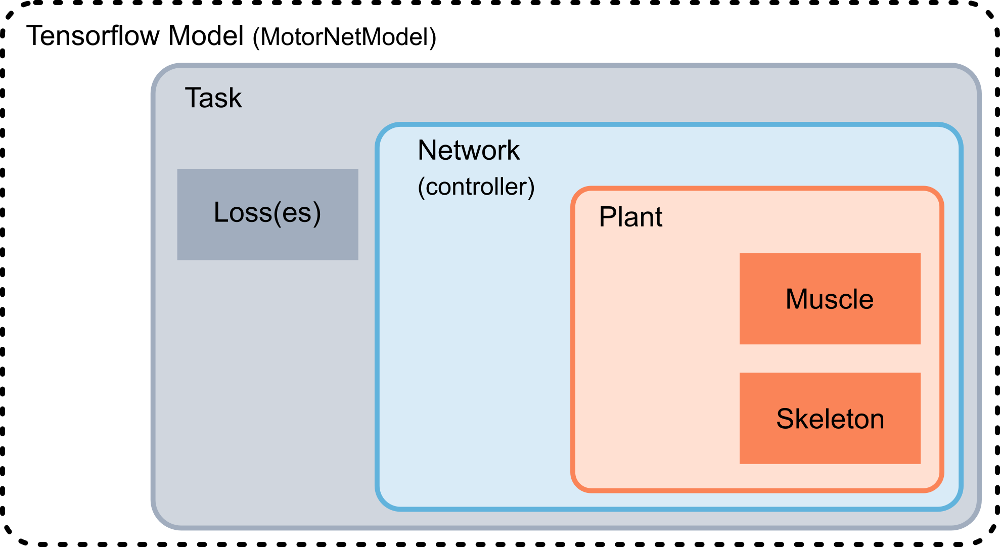
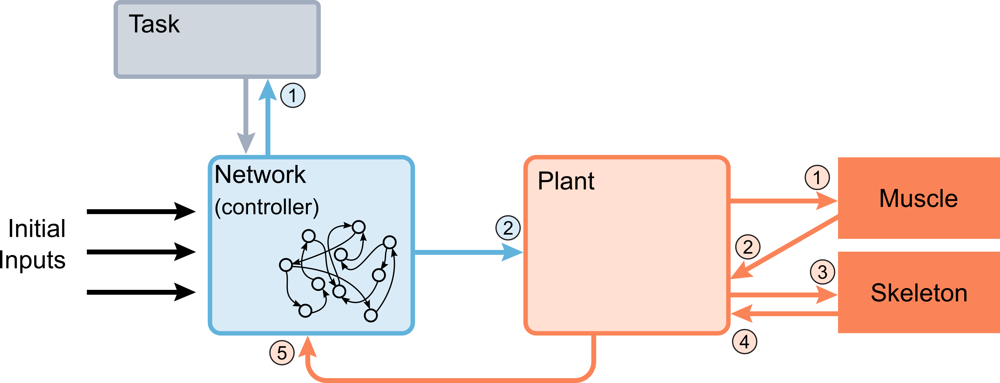
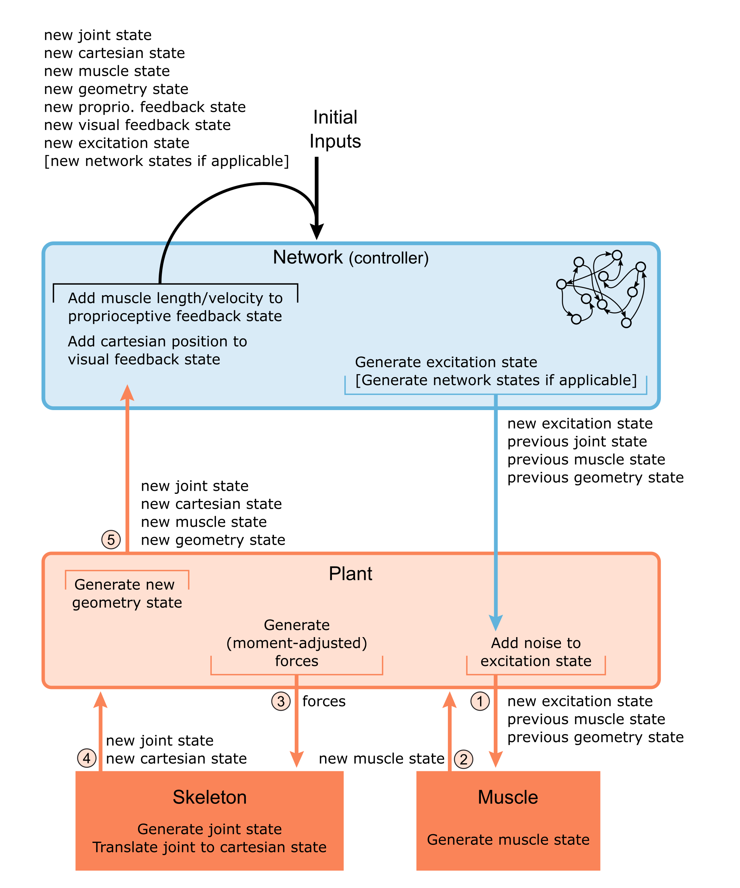

Functional Overview#
MotorNet Classes
Being built in Python, Motornet is an object-oriented toolbox. There are six object classes to consider.
Muscleobjects.Skeletonobjects.Plantobjects.Networkobjects.Taskobjects.Lossobjects.
In addition, a MotorNetModel class will
wrap all these objects into a model instance, which TensorFlow can use like any
TensorFlow model instance for training and
inference. In fact, MotorNetModel is a
subclass of tensorflow.keras.Model (see the
API Documentation
for more details).
Muscle class
Muscle objects handle muscle dynamics,
and muscle state generation.
Skeleton class
Skeleton objects hold skeleton and
geometry information, handle skeleton (motion) dynamics, generate joint states. and can convert joint states to
cartesian states.
Plant class
Plant objects handle coordination of
information flow between Muscle and
Skeleton objects. They hold information
about how muscles wrap around the skeleton, apply moment arms to forces generated by muscles to compute
moment-adjusted (or generalized) forces that will be applied to skeletons. They also hold feedback delay properties.
Network class
Network objects hold network weights,
perform the forward pass, and apply the feedback delays based on feedback properties held by the plant. They can
also send a request to the Task object to recompute the target states online. This is useful if one wants the
inputs to adjust based on some variable whose value changes over the trial.
Task class
Task objects holds loss information,
can produce initial inputs to the network offline, and can perform recomputation of inputs online if the user
desires.
Loss class
Loss objects compute penalty values for
training the network free parameters (the weights). They also hold routines for compounding losses when several losses
are assigned to the same output state.
Class Hierarchy
The classes presented above rely on each other to function correctly. Consequently, they must be declared in a sensible order, so that each instance retains as attribute the instances on which they rely. This leads to a hierarchical class structure, where each instance lives in the computer memory in a nested fashion with other instances. The illustration below displays how this hierarchy is organized.

Representation of the hierarchical relationship between class instances in MotorNet.
Information Flow at Runtime
Computation Steps
The figure below summarizes the operations performed at runtime, as well as what how information flows between class instances.
- Recompute inputs [optional]
 Send new motor commands
Send new motor commands Pass on motor commands
Pass on motor commands- Return forces
- Send moment-adjusted (generalized) forces
- Return new joint & cartesian states
- Return feedback states

Representation of information flow at runtime in MotorNet.
State Flow
A dedicated tutorial (available here) breaks down how states are generated and how they flow during computation. This is summarized in the illustration below, which is reproduced here for convenience.

Representation of the state flow at runtime in MotorNet.